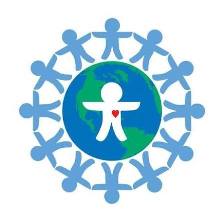
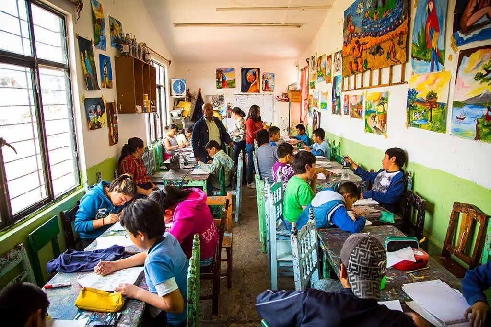
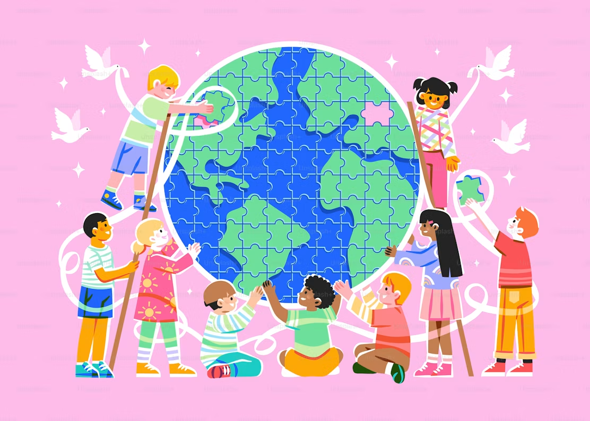

World Children’s Day 2026:
World Children's Day is on the 20 November each year. This year is the 37th anniversary of the adoption of the UN Convention on the Rights of the Child – a special moment where governments around the world (including Australia) agreed on 54 different rights that every child under 18 years old should have to live a safe, healthy and happy life.
The Convention on the Rights of the Child is based on what a child needs to grow, learn and live a safe and healthy life with dignity and respect. It is for every child, regardless of gender, religion, culture, abilities or ethnicity. Is this so for even almost every child in Australia?
As you can see on the Children’s Rights page. of this website in 2024 amendments were made responding to impacts of our ever changing world on children including:
3. be listened to and have their opinions count in all decisions affecting them, thus recognising their fundamental right to participate in shaping the communities they live in,
6. Be protected from all forms of violence (physical, psychological, and sexual) in all settings, including the home
5.benefit from a safe and empowering experience in the fast-evolving digital environment in which they can conserve their agency and be digitally literate to navigate securely,
8. Access child-friendly systems of justice and commensurate remedies when their rights are violated
On World Children’s Day, we’re standing up for every child’s right to grow up healthy in body and mind. Every child has the right to feel and be healthy – not just physically, but mentally and emotionally and in every part of who they are.
A healthy childhood starts with the basics: nutritious food, clean water, healthcare, safety and support. But it also means so much more: love, connection and the chance to feel safe, heard and cared for. When children have all of this, they don’t just survive, they grow, dream and thrive. Australia is not at war, yet too many children in our country do not have their basic needs met nor do they have the safety, support and respect for who they are, in many cases, enough for them to survive, let alone thrive.

For many years Australia was known as the Lucky Country. Now children are not only victims of terror, they are attacking others of all ages; school truancy, youth depression, suicide, and acts of religious and racial discrimination are increasing rapidly and religious discrimination is higher than ever before? Why?In Korczak’s words, “ One should not leave the world as it is.”
Yes, it is difficult for one person to make a difference, but think about when someone helped you when you were in trouble. Did it make a difference? Even small acts of kindness can make a start. Standing up for what you believe in makes sure other people know who you are and why you do what you do. Understanding the other not only helps them, it helps you too. To everyone else other than within your neighbourhood or community, you are the other!

Janusz Korczak was only one person but because he saw children as people who have their own ideas and each one can make a difference he said, “Children are not the people of tomorrow, but people today. They are entitled to be taken seriously. They have a right to be treated by adults with tenderness and respect, as equals. They should be allowed to grow into whoever they were meant to be - The unknown person inside each of them is the hope for the future.”. This one person through his words and actions made a difference to so many young people all over the world and these words and actions formed the foundation for the Convention on the Rights of the Child.
“This World Children’s Day, let us listen to children. And let us amplify their voices as they stand up for their rights.” UN Secretary General Antonio Guterres.
Let’s get loud to make Australia a better place for every person under the age of 18!
We believe that every child should have the chance to speak up about issues they care about. It’s their future, but too often their voices aren’t heard.
If your school is not on the Mornington Peninsula, have a good look at this and think how you, your school and you with some friends can also do this or other ways make your voices heard too.
On Thursday 20 November the Janusz Korczak Association Australia will mark World Children’s Day, the anniversary of the UN Convention on the Rights of the Child. This year we are inviting every school on the Mornington Peninsula to hand the day over to its students.
Korczak believed that children are not the people of tomorrow but the people of today. World Children’s Day is the one day in the year when that idea is on the world’s calendar, and we want it heard in classrooms, staff rooms and school councils across Australia.
Schools that register will receive a short activity pack and a certificate of participation for every student. Register by emailing info@korczakaustralia.com.au with your school name and the number of students taking part.
When: Thursday 20 November 2026, any time during the school day
Where: your own school; an online gathering of participating schools will be held at 2.00 pm AEDT
Cost: free
If you haven’t seen a poster or information about the Convention on the Rights of the Child or in your school, Early Learning Centre, library or community centre, look at our own Children’s Rights page. And more about this important day on : World Children’s Day
“Children are not the people of tomorrow, but people today.” Janusz Korczak
If your school doesn't know about World Children’s Day yet, tell your teacher or your Principal that this is a very important day all around the world because: “Child rights are human rights. They are non-negotiable. But in too many places today children’s rights are being misunderstood, disregarded, or even denied and attacked. World leaders must uphold their obligations under the Convention on the Rights of the Child and respect, protect and fulfill the rights of every child, everywhere.
Investing in children today secures a better future for them, and us all.”
If nothing is happening in your school or community or you are afraid you might not be listened to or you live in a rural area or far away from schools and community centres, it is very important your voices are heard too! Following are some suggestions:

If you would like to share your video, painting, drawing, speech or anything else you have done or been thinking about that would help you and other you people live the rights you are all entitled to, please send here ……. You can help make World Children’s Day a day to celebrate!